Adam Klement
•10.08.2023
Je Stubaital nejhezčí místo v Rakousku?
Už nejednou jsem byl v Rakousku, ovšem jsem ho neprocestoval celé skrz naskrz. Tentokrát jsme se vydali k Innsbrucku, přesněji do Stubaitalu, kde byl náš týdenní pobyt určen.
1. Den
Naše 8 hodinová cesta započala a mohli jsme vyrazit. Autem jsme to vzali přes hraniční přechod v Chebu, kde jsme se vydali směrem k Mnichovu a od Mnichova až úplně dolů do Rakouska. Na poměr aut, kterých každý pracovní den projede německé dálnice, jsme měli až nezvykle klidnou jízdu bez větších problémů nebo zpoždění. Společnost na cestách mi dělal můj koupený řízek s kyselými okurkami, kterých jsem se nedokázal nabažit.
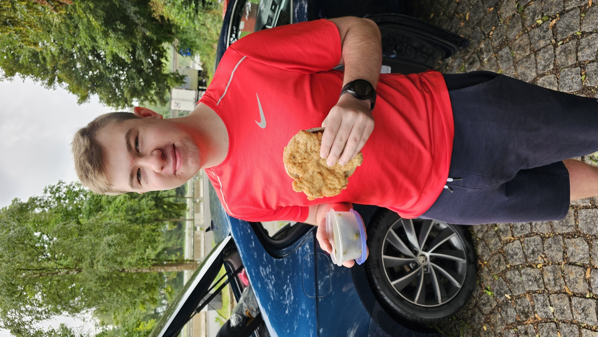Ubytování jsme si zařídili v moderním "Sporthotelu Neustift", kde jsme byli vřele přivítáni drinkem na účet podniku a okamžitým odbavením a předáním klíčků od pokoje. Zapomněl jsem doříct, že v ceně toho pobytu byla i letní karta, která vám dovoluje zdarma jednou za den jet nahoru a dolů jakoukoliv lanovkou ve Stubaitalském regionu (platí pouze na ty jednotlivé lanovky, takže jsme za den mohli klidně jet na všechny vrcholky a stále bychom to měli zdarma).
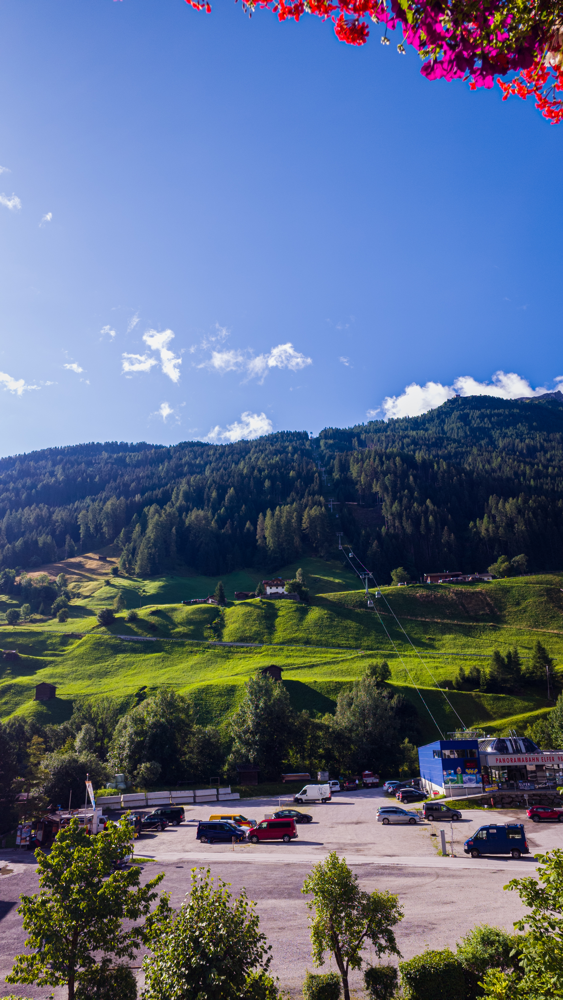2. Den
U našeho hotelu se nacházela hned první lanovka, kterou jsme vyjeli nahoru na Elfer. Ta se nachází 1790 m.n.m., tudiž výš, než naše Snežka. Z ní je krásný výhled na stubaitalské údolí a malou vesničku Neustift, kde jsme bydleli. My jsme se ale rozhodli vyjít výše a skončili jsme až u Elferhütte, která leží o 100 metrů výše než konec lanovky na Elfer.
Zde jsme si dali dobrou kávu, horkou čokoládu a podívali se dolů do údolí. Výhled je z kteréhokoliv vrcholku Stubaitalu nádherný a nabízí nezapomenutelný zážitek z Alp.
Po sjezdu lanovkou zpět k našemu hotelu jsme sedli do auta a vyrazili do jednoho z největších měst Rakouska, a to přímo do Innsbrucku. Zde se totiž krom krásného centra města nachází i moderní skonaský můstek, který v jeho nečinnosti a letním provozu slouží návštěvníkům jako turistická atrakce s možností se občerstvit v restauraci. Zároveň je na jeho vrcholu parádní rozhledna, ze které vidíte celý Innsbruck i letadla, která v Innsbrucku přistávají.
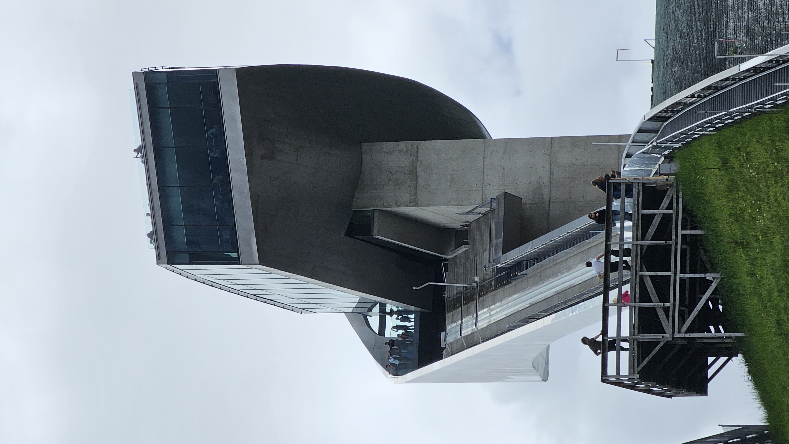 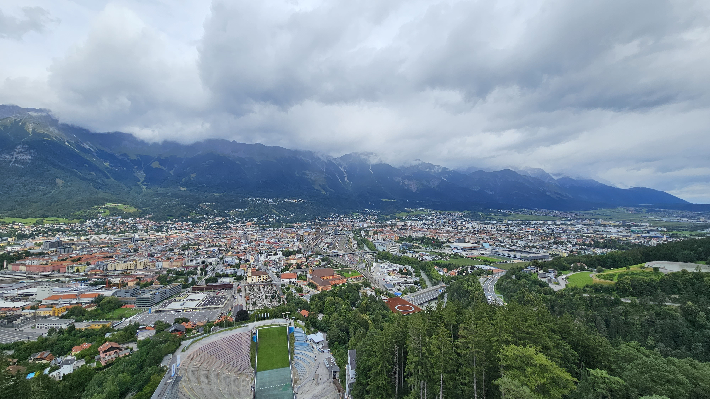Měli jsme také parádní tip na horskou stezku (silnici), která se táhne několik kilometrů po horských hřebenech až na samotný vrch a konce cesty Gletscherstraße. Tato silniční cesta měří zhruba 26 kilometrů a její výškový rozdíl je až 1 500 metrů! Dokonce je z ní vidět i kousek Itálie, Švýcarska a Tyrolska v Rakousku. Při našem výjezdu nás překvapilo počet zvířat, které se zde volně potulují. Na pár minut nám dokonce pár krav s telaty zablokovala průjezd a my tam museli čekat, než odejdou.
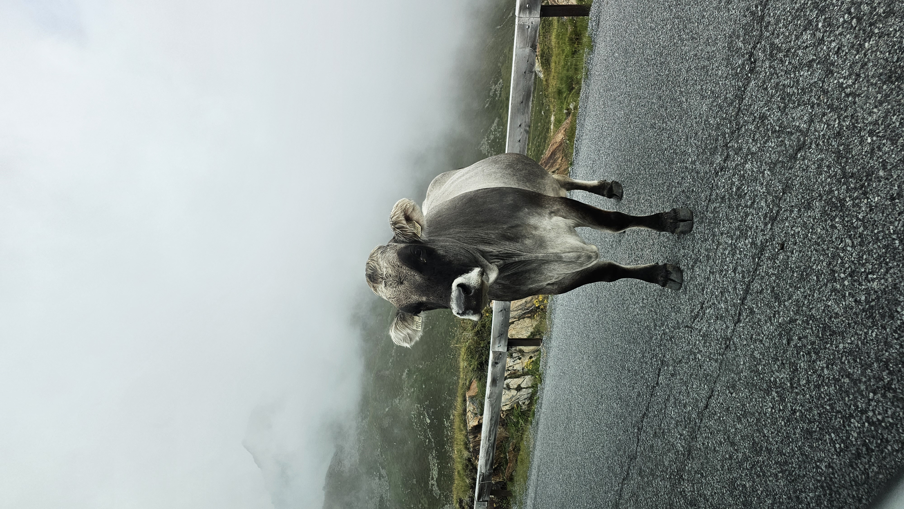 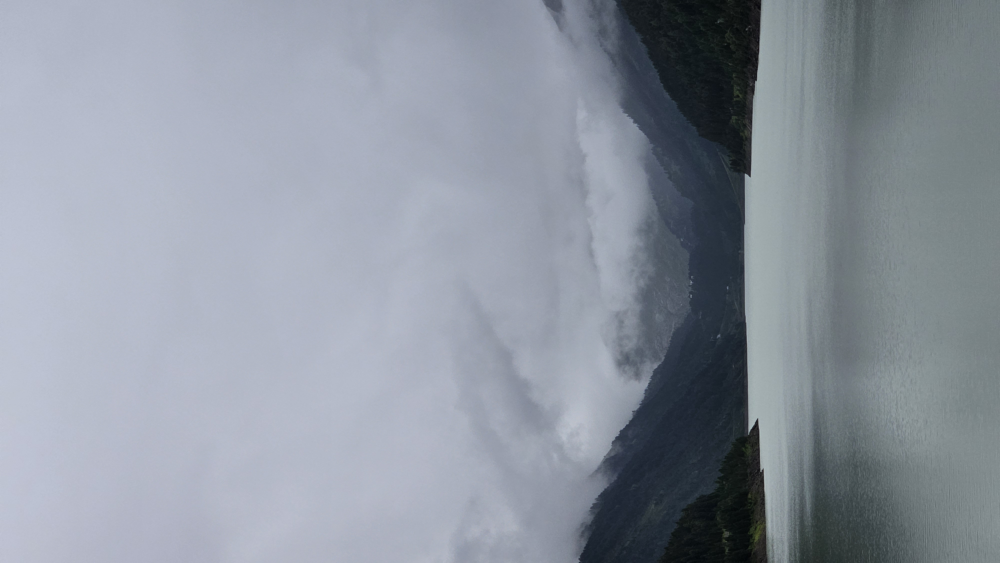Cestou zpět jsem měl nádherný výhled z okna auta na menší vrcholky hor lemující dálnici zpět do Innsbrucku. Mlha pomalu odcházela a tvořila tak dechberoucí náměty na fotky.
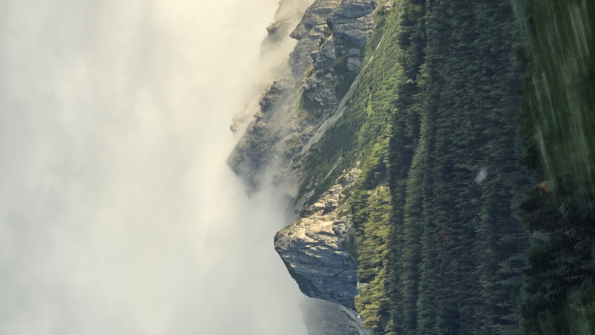3. Den
Rozhodli jsme se, že se dnes vydáme na nejvyšší bod Tyrolu, a tím je tzv. "Top of Tyrol" ve výšce až 3 210 metrů. Cesta až na jeho vrchol je přes dvě lanovky. Jedna oranžová lanovka je až po 30 cestujících a velice rychlá, což je pro lyžaře super zpráva. Druhá je již menší kabinková lanovka s maximálně 6 místy a jede o něco pomaleji než její větší verze. Je nutno dodat, že ta menší lanovka se díky silnému větru na vrcholku dosti houpe, což může některým způsobit nevolno nebo aspoň minimálně vyvolat menší pocit paniky. Nejhorší scénář je ovšem ten, když se s vámi lanovka na chvíli zastaví. To je pro lidi, co na tyhle "přerušování" nejsou zvyklí, docela obtíž a může to způsobit docela velké psychické problémy.
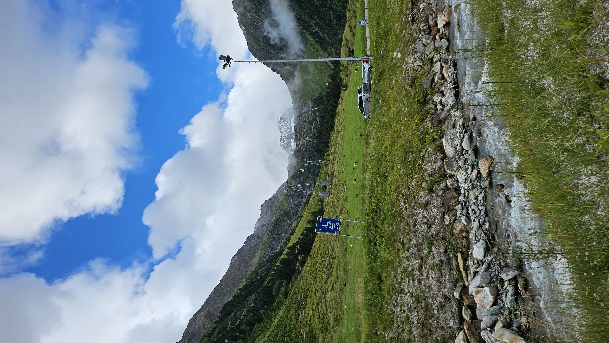Na samotný vrcholek ale ještě musíte z poslední lanovky o pár metrů výš pěšky, a to si dáte máknout, když musíte jít po schodech nahoru. Samozřejmě schody byly namrzlé, takže se doporučuji pevně držet a koukat pod sebe. Jakmile to v pořádku vyjdete, uvidíte nádherný rozhled na celý vrcholek a další významné ledovce tyrolského území.
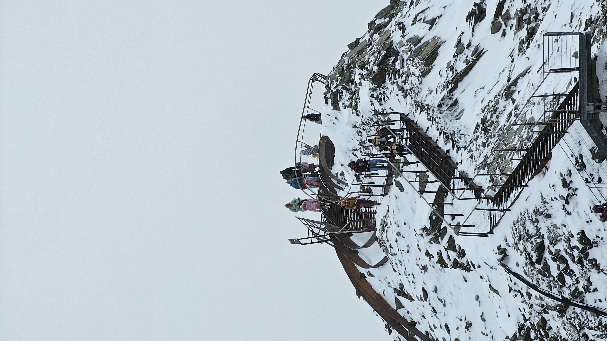 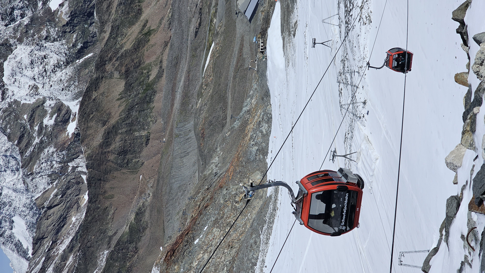
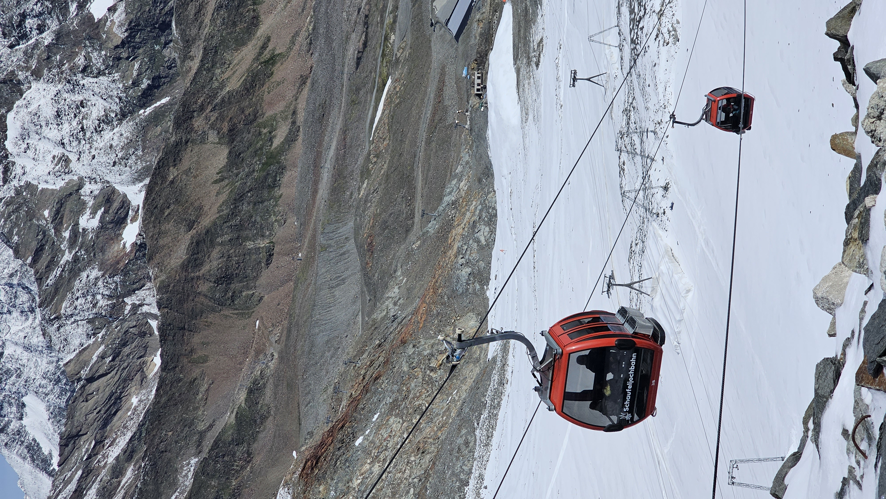
Komentáře
Celkem 7 komentářů
Fanda Kopko
Jako mohlo by to být delší 🤓
Karel Ježek
Tam bych nejradši jednou taky vyrazil
Luzi Zíka
W
Valentino
On gong pojedu tam v létě taky
Martin
@hudecc jedeme hned
Elon Musk
To je tak super. Pošlu ti $2000 na účet. Pošli mi pls číslo kreditky, datum expirace a CVV.